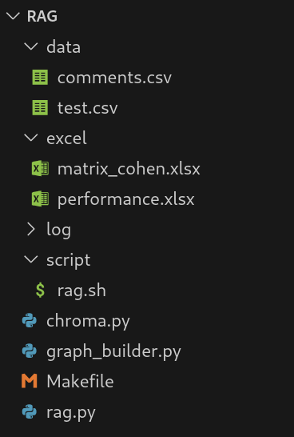
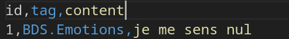
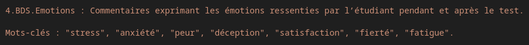
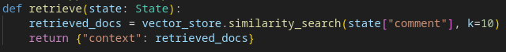
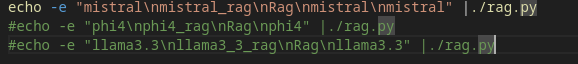

Architecture
The general architecture of the code is as follows:

-
data/: This folder contains two CSV files.
comments.csvcontains the comments used to populate the database, andtest.csvcontains the comments used to evaluate the system. - excel/: Contains the output files generated by the system.
- script/: Contains the script used to execute the code on the test set.
-
chroma.py: This script creates the database from
data/comments.csv. After execution, it generates a folder namedchroma_db/.
Alter the Database
To modify or completely replace the database, edit the file data/comments.csv.
Make sure that the modified file respects the expected format:

After making your changes, you must regenerate the database by running the script below.
Make sure you are in the subjective-comment-clf/rag folder, which contains chroma.py:
./chroma.pyModify Categories and Keywords
To change the categories or keywords used by the system, open the file graph_builder.py
and modify the corresponding prompt section.

Modify the Number of Retrieved Documents
To change k, the number of documents retrieved during inference, open the file graph_builder.py
and locate the line that sets k = 10 as shown in the figure below. Then put the value you want.

Copy Modifications to GPU
Since there is not a direct synchronization between the CPU and GPU servers, you need to manually copy the modified files from the CPU server (e.g., potato) to the GPU server (e.g., aker). Make sure you are connected to the potato server (not aker) before running the command below :
scp -r ~/Documents/subjective-comment-clf/rag username@aker.imag.fr:~/Documents/subjective-comment-clf/Run the Code
The file rag.sh allows you to run the code on the test set. It contains the following three lines:

Each line corresponds to the execution of the system with a different model. By default, only the first line (using Mistral) is active — the other two are commented out.
To switch models, simply uncomment the line corresponding to the desired model and comment out the others.
Make sure you are in the subjective-comment-clf/rag/script folder.
Then, run the script with:
./rag.shTransfer the Output
The output files generated by the system are located in the subjective-comment-clf/excel/ folder.
Since the code was executed on the GPU server, this folder is stored on the GPU machine.
You need to copy it from the GPU server to the CPU server (e.g., potato).
Make sure you are connected to the potato server (not aker) before running the command below (don't forget the . at the end and replace username with your actual username):
scp -r username@aker.imag.fr:~/Documents/subjective-comment-clf/excel .